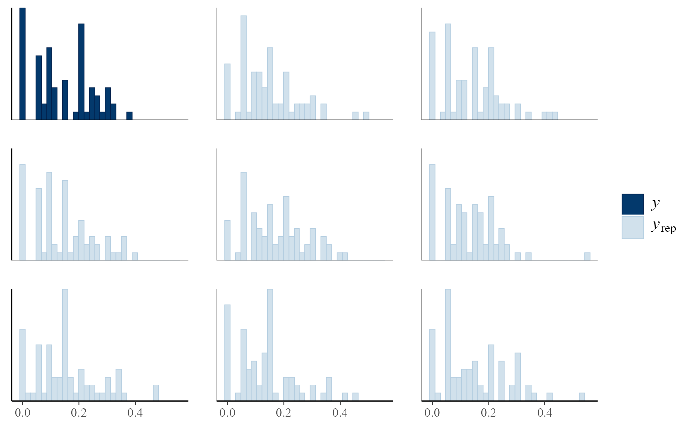
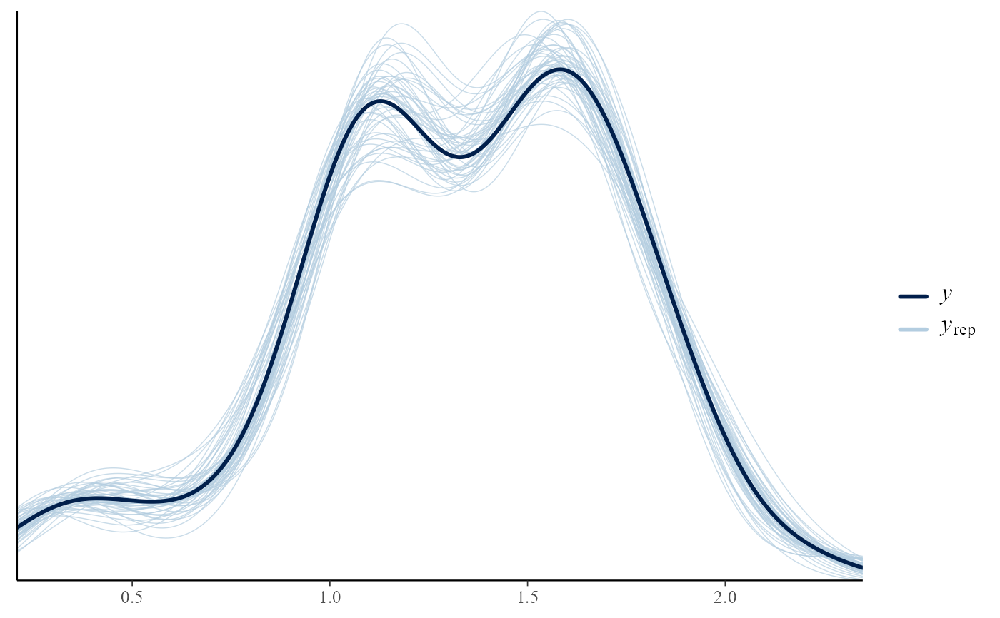
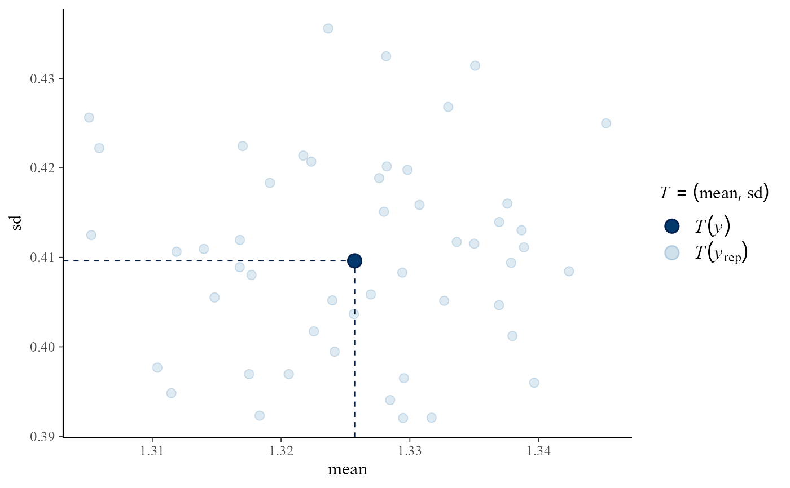

pp_check method for class "hef". This provides an interface
to the functions that perform posterior predictive checks in the
bayesplot package. See PPC-overview for
details of these functions.
# S3 method for hef pp_check(object, fun = NULL, raw = FALSE, nrep = NULL, ...)
Arguments
| object | An object of class "hef", a result of a call to
|
|---|---|
| fun | The plotting function to call. Can be any of the functions detailed at PPC-overview. The "ppc_" prefix can optionally be dropped if fun is specified as a string. |
| raw | Only relevant if |
| nrep | The number of predictive replicates to use. If |
| ... | Additional arguments passed on to bayesplot functions. See Examples below. |
Value
A ggplot object that can be further customized using the ggplot2 package.
Details
For details of these functions see PPC-overview. See also the vignettes Conjugate Hierarchical Models, Hierarchical 1-way Analysis of Variance and the bayesplot vignette Graphical posterior predictive checks.
The general idea is to compare the observed data object$data
with a matrix object$data_rep in which each row is a
replication of the observed data simulated from the posterior predictive
distribution. For greater detail see Chapter 6 of
Gelman et al. (2014).
References
Jonah Gabry (2016). bayesplot: Plotting for Bayesian Models. R package version 1.1.0. https://CRAN.R-project.org/package=bayesplot
Gelman, A., Carlin, J. B., Stern, H. S., Dunson, D. B., Vehtari, A., and Rubin, D. B. (2013). Bayesian Data Analysis. Chapman & Hall/CRC Press, London, third edition. (Chapter 6) www.stat.columbia.edu/~gelman/book
See also
hef and hanova1 for sampling
from posterior distributions of hierarchical models.
bayesplot functions PPC-overview, PPC-distributions, PPC-test-statistics, PPC-intervals, pp_check.
Examples
############################ Beta-binomial ################################# # ------------------------- Rat tumor data ------------------------------- # rat_res <- hef(model = "beta_binom", data = rat, nrep = 50) # Overlaid density estimates pp_check(rat_res)# \donttest{ # Overlaid distribution function estimates pp_check(rat_res, fun = "ecdf_overlay")# } # Multiple histograms pp_check(rat_res, fun = "hist", nrep = 8)#># \donttest{ # Multiple boxplots pp_check(rat_res, fun = "boxplot")#># Predictive medians vs observed median pp_check(rat_res, fun = "stat", stat = "median")#># } # Predictive (mean, sd) vs observed (mean, sd) pp_check(rat_res, fun = "stat_2d", stat = c("mean", "sd"))############################ Gamma-Poisson ################################# # ------------------------ Pump failure data ------------------------------ # pump_res <- hef(model = "gamma_pois", data = pump, nrep = 50) # \donttest{ # Overlaid density estimates pp_check(pump_res)# Predictive (mean, sd) vs observed (mean, sd) pp_check(pump_res, fun = "stat_2d", stat = c("mean", "sd"))# } ###################### One-way Hierarchical ANOVA ########################## #----------------- Late 21st Century Global Temperature Data ------------- # RCP26_2 <- temp2[temp2$RCP == "rcp26", ] temp_res <- hanova1(resp = RCP26_2[, 1], fac = RCP26_2[, 2], nrep = 50) # \donttest{ # Overlaid density estimates pp_check(temp_res)# Predictive (mean, sd) vs observed (mean, sd) pp_check(temp_res, fun = "stat_2d", stat = c("mean", "sd"))# }